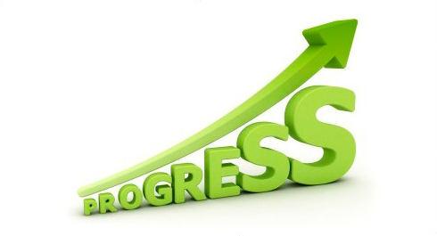
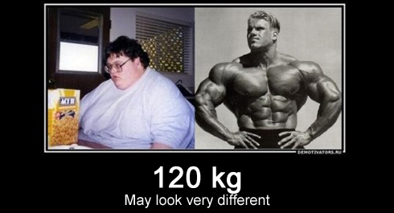
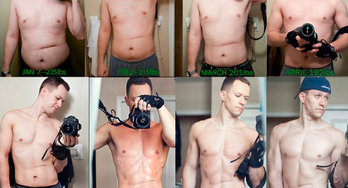
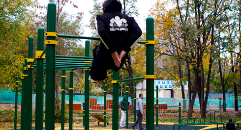

In order to reach your goals in any chosen activity, you need to do just 4 things:
1. Define your goals
2. Make a plan
3. Start working
4. Control your progress
We marked our goals, made a plan, and work everyday, moving forward to our goals. So, today we will speak about controlling progress.
Why is it so important?

If you set a goal (build muscles, loose fat, make more reps), then you need to know how close you get to it. Besides, it’s useful to know which methods and protocols work better for you and which do not. Of course you can train instinctively, but if you are a newbie to workout and physical conditioning, I would recommend you start a diary. You will notate some sort of data in it.
There are 3 main methods to control your progress.
Weight control

The most simple and popular method is to control your weight. Unfortunately, a lot of people misunderstand it or do not treat results properly.
We have already spoken about diets in the second week of our training program, but today I want you to remember one thing – weight on the scales is only a number, and it can be far, far away from your real results. Compare 2 pictures above . These 2 men have equal weight – 260 pounds but they don’t look the same! Now you can ask yourself what is important for you, numbers or result?
Measuring circumferences

Another popular method to control you progress is measuring circumferences of different parts of your body. Most often they are chest, waist, hips, biceps and shoulders. In order to monitor fat percentage, the most significant thing is waist measuring. You can find a lot of data to define “ideal ratios” for your body in the internet.
This method is far more objective to control your progress. I set quotes for ideal ratio for one reason. Every man and woman is unique, but also everyone has their own idea/concept of ideal. I am sure you already have a vision of your own perfect body, right? And of course you want to get this perfect body through hard training. But can you name what numbers/indices your body must have to get perfect? I don’t think you can.
Measuring circumferences is a good way to control your progress, but in the long-term you need some graphic representation. Oh yeah, one more thing. Don’t measure yourself very often, it is enough to do it once a month.
Making photos and video

And now we get to my favorite method to control progress. Why is it my favorite? Because in my humble opinion this method is the fairest (of course you need to relax and don’t contract your muscles and make photos in the same light conditions every time, otherwise, you will fool yourself).
The best way is to make photo using a tripod in the same place and lighting conditions with different stances. In this way you, will get objective pictures of yourself and see the progress of your training, instead of running a risk of some lucky shadow on your chest.
If you are able to record a video, this will be a great option! You can record yourself posing different stances (that is where you can do like bodybuilders), or doing exercises or anything that may help you to evaluate your progress.
Strength conditioning

The last method in our list is to check your progress through the count of reps and weights. Of course street workout is not one of those disciplines where reps are the main goal (in our case reps are the result of our training but not the main goal).But, anyway, you can use counts to control your progress.
If you made 10 reps clearly some time ago, and now can do 20 reps, then it is obvious that you’ve got stronger. If you couldn’t make a pull-up some time ago and now you can, then it is obvious that you’ve got stronger. If you made 10 bodyweight pull-ups some time ago, and you make 10 pull-ups with a 30-pound dumbbell, then it is obvious that you’ve got stronger.
In a short period of time you can notice that your strength doesn’t change or grows not as fast as you want it to. That’s why I remind you to NEVER set reps as your primary goal. For example, you do 10 pull-ups and set a goal to do 35 reps of them. You work hard, eat well and reach 33 reps of pull-ups? But can’t do 2 more. Are you a loser? Don’t you have any pride for the path you have gone from 10 to 33? So, keep working and while getting stronger your reps will grow too. If you have enough patience and motivation you will see results.
Of course reps and new tricks are not so simple as you can think about them. They show not only your growing strength, but also your adaptation to current workout routine. Remember that.
Conclusion
There is a saying telling us: “If you begin to workout, than after 12 weeks you notice first changes, after 24 weeks your friend will notice changes, after 48 weeks the whole world will see your changes!” I think this saying is not very far away from the truth. So, try not to hurry and control your progress every month or two.